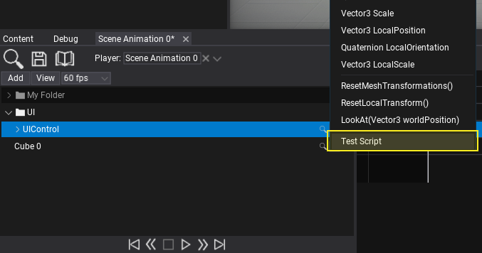
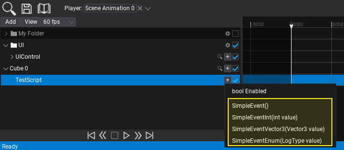
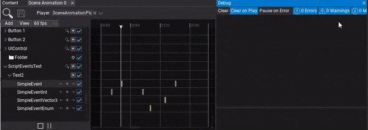

HOWTO: Use Event Track
In the following tutorial, you will learn how to add event track and call it in timeline. To learn how to create scene animation see this page.
Scene Animations support calling custom C# methods using a dedicated event track. This allows to invoke any public method from the animated object (actor, script or nested object). Method to invoke has to be void and can use up to 8 parameters (value types only).
Tutorial
1. Create scene animation
Also preapre the script with the events you want to call. Example:
public class TestScript : Script
{
public void SimpleEvent()
{
Debug.Log("SimpleEvent");
}
public void SimpleEventInt(int value)
{
Debug.Log("SimpleEventInt: " + value);
}
public void SimpleEventVector3(Vector3 value)
{
Debug.Log("SimpleEventVector3: " + value);
}
public void SimpleEventEnum(LogType value)
{
Debug.Log("SimpleEventEnum: " + value);
}
}
2. Add actor track
You can drag and drop the actor into the tracks panel or use button Add -> Actor to create new track and pick the actor to animate it.

3. Add Script subtrack
Use the + button and pick the Script subtrack to call its method. You can also invoke the actor methods itself.

3. Add subtrack
Use the + button and pick the script method to invoke.

4. Add events
Now you can insert keyframes to the event track. To do so use the + button as shown in the picture below. You can also use right-click to open the context menu and choose Add keyframe option. Each keyframe contains a method parameters data and represents a moment in time to call the event every time playback passes the keyframe time position. To edit parameter simply double-click on a keyframe.
5. Play the animation
The final step is to add Scene Animation Player actor and play this animation.
